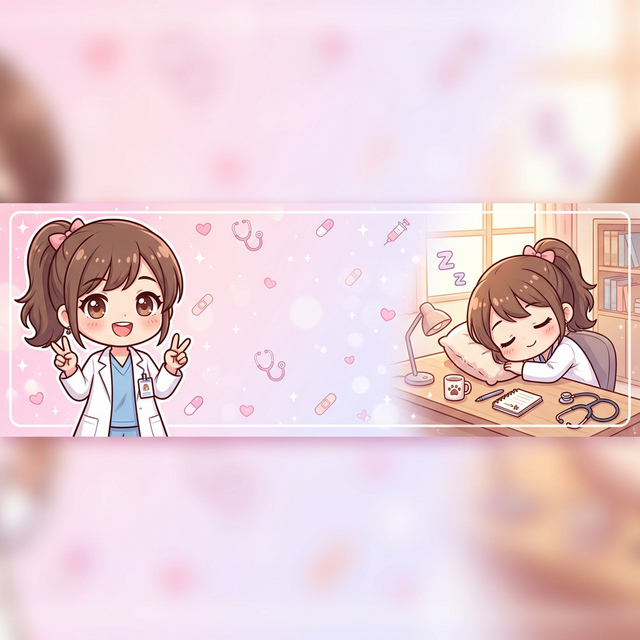

🩺 X プロフィールセット
📷 プロフィール画像（400×400推奨）
📥 プロフ画像をダウンロード
🖼️ ヘッダー画像（1500×500推奨）

📥 ヘッダー画像をダウンロード
✍️ プロフィール文（コピペ用）
ゆるふわ研修医みなみ🩺
@yurufuwa_minami
🩺 研修医1年目のドタバタ日常4コマ 💊 AIで描く医療マンガ 🗳️ みなみが何科に行くかはみんなが決める！ 📌 毎日投稿｜スクショ&RTどうぞ♡ 🏥 白衣ぶかぶか｜名札いつも裏返し 「病院あるある」で笑って 「何科がいい？」で盛り上がろう💉 #医療マンガ #ゆるふわ研修医みなみ #AI漫画
📋 プロフィール文をコピー
🏷️ 投稿用ハッシュタグ
#ゆるふわ女医みなみ #医療マンガ #AI漫画 #医療あるある #研修医あるある #病院あるある #ドクターあるある #反サロ #ポリファーマシー